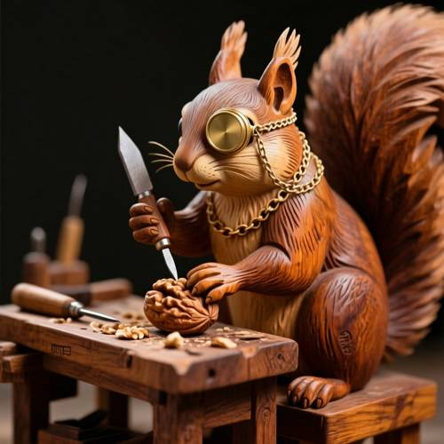
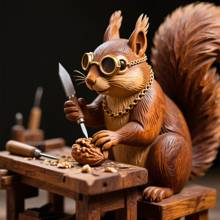
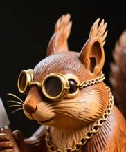
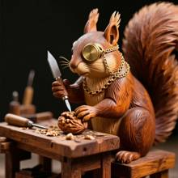
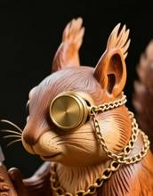

Action — In an exquisite wooden sculpture, a squirrel wearing a monocle was car
In an exquisite wooden sculpture, a squirrel wearing a monocle was carefully carving a walnut with a small carving knife in its paws.


Judge — Direct
- PASSAction - Hand (Character/Anthropomorphic) — The wooden sculpture of a squirrel depicts it holding a walnut in its left paw and a small carving knife in its right paw. The paws are sculpted to grip the items, with the blade of the knife positioned against the walnut, suggesting the action of carving. The paws' digits are well-defined.
- FAILWorld Knowledge — The wooden squirrel sculpture is wearing a pair of round-rimmed glasses with two lenses and a bridge across the nose. This is not a monocle, which is a single eyeglass for one eye.
Judge — Continuum
- PASSAction - Hand (Character/Anthropomorphic) — The image shows a wooden squirrel sculpture with anthropomorphic paws. The right paw is holding a small carving knife with a wooden handle, and the left paw is holding a walnut steady on a small wooden table. The paws are sculpted with distinct digits that are correctly positioned to hold the items for the action of carving.
- PASSWorld Knowledge — The wooden squirrel sculpture is depicted wearing a single, round, gold-rimmed lens over its right eye. A gold-colored chain is attached to the lens and drapes around the squirrel's neck. This is an accurate visual representation of a monocle.
What the agent did
Thinking
Let me break down this prompt: - A refined wooden sculpture - A squirrel wearing a monocle - A squirrel carefully carving a walnut - With a small carving knife held in its paw In other words, the image should look like a wooden sculpture — probably a carved wood aesthetic, with visible wood grain, and a monochrome wood-tone color scheme. The squirrel is holding a small carving knife and carving a walnut, and wears a monocle on one eye. Let me generate this using qwen-image. The prompt should be detailed about the visual elements: wooden sculpture, wood grain, warm brown tones, a squirrel with a monocle (a wire-rimmed monocle held by a chain), holding a small carving knife, working on a walnut, a workbench or background, perhaps fine craftsmanship, a soft light. Let me write a strong prompt: "A refined wooden sculpture, finely hand-carved: a squirrel wearing a small brass monocle on its eye (with a delicate chain), sitting at a miniature workbench, holding a small carving knife in its paws, carefully carving a walnut shell. Realistic wood grain texture across the entire sculpture, warm chestnut and amber wood tones, subtle tool marks, softly warm studio lighting, shallow depth of field, highly detailed macro craftsmanship shot." Let me generate it at 1024x1024.
Step 1 — `generate_image`
{
"model": "qwen-image",
"prompt": "An exquisite hand-carved wooden sculpture: a squirrel wearing a small brass monocle with a delicate chain over one eye, seated at a miniature wooden workbench, holding a tiny carving knife in both paws, carefully carving a walnut. The entire piece is rendered in realistic carved wood with fine visible grain, tool marks and chisel details, warm chestnut, amber and umber wood tones, soft warm studio lighting from the side, shallow depth of field, macro craftsmanship photography of the sculpture.",
"width": 1024,
"height": 1024
}Result img_0

Thinking
The result is great! Let me verify: - Wooden sculpture: Yes, clearly a carved wooden sculpture with visible wood grain. - Squirrel wearing a monocle: Hmm — this looks more like a monocle/goggles hybrid. There's a round brass frame around one eye (right eye), and a chain too. Actually it looks like a monocle on one eye with a chain draped across the chest. There's also a small round thing near the other eye that might look like a second lens — it could be interpreted as a monocle with a chain. Let me zoom in on the face to check. - A small carving knife held in the paw: Yes, holding a small knife in one paw. - Walnut: Yes, holding a walnut on a workbench with wood shavings. To verify the monocle detail, let me use inspect_region to take a closer look at the face.
Model
The first result looks very close to the brief. Let me zoom in to verify the monocle detail before deciding.
Step 2 — `inspect_region`
{
"image": "img_0",
"roi": "the squirrel's face and eye with the monocle",
"padding": 0.2
}Result img_1

Thinking
In the cropped image, the squirrel is wearing what looks like a monocle, but there's also a second small round frame on the left side (from the viewer's perspective, the left). It looks more like a monocle-goggle hybrid: a large brass round lens over one eye, and a smaller second round frame on the other side. Actually, looking closely: there's a large brass circle over one eye, with a smaller brass circle to its left. It could look like small goggles. But it might be interpretable as a monocle with a chain. The prompt calls for "a monocle" — a single lens over one eye with a chain. The current image has two round frames, which might read as goggles rather than a monocle. However, the smaller one is positioned near the eye... Let me think: the large circle covers the eye on the right side of the image (the squirrel's left eye). The smaller circle on the left side of the image (the squirrel's right eye area) looks like a smaller brass ring, and it's possible the eye isn't visible inside it. Hmm, that might make it look like a monocle on one side... no wait — a monocle is one lens over one eye. Two lenses = goggles. Let me look at the full image again: there's a large brass circle around one eye, and a small brass circle on the other side of the nose. It reads like a monocle plus something else, or half-goggles. The brief says "a squirrel wearing a monocle." A single lens is the classic monocle look. The current image has an extra second ring, which is a deviation. It's a subtle point though — some monocles are drawn with decorative chains. But the second round frame is clearly a second lens. I think it's worth one editing pass: remove the second small lens, so only the single monocle over one eye and the chain remain. The rest of the image is very good. Edit prompt: "Remove the small second round brass frame near the other eye, leaving only a single round brass monocle over the eye on the right, with the chain; keep everything else identical." Following the guidelines: describe the fill, not the removal. "Replace the extra small brass ring around the other eye with smooth carved wood matching the face, keeping only the single large brass monocle over the other eye and its chain." Use edit_image on img_0. After editing, re-verify and then mark as best. Actually, before editing, should I mark img_0 as best right now? According to the instructions: mark as soon as you have an image you'd be willing to submit. img_0 is quite good — a squirrel with a monocle (with one extra ring), a knife, a walnut, a wooden sculpture. I'd be willing to submit it. Let me mark it as best, then try improving it.
Model
The overall image is excellent, but on the face there are two round brass frames (one over each eye), which reads like small goggles rather than a single monocle. Let me mark this as the current best, and then I'll do an edit pass to fix it.
Step 3 — `mark_best`
{
"image": "img_0",
"reason": "Strong match: carved wooden sculpture of a squirrel with monocle-and-chain, small carving knife in paws, walnut on a workbench. Only flaw is a second small brass ring near the other eye."
}Thinking
Alright, let me edit: remove the extra small brass ring near the other eye, and leave a single monocle.
Step 4 — `edit_image`
{
"image": "img_0",
"model": "qwen-image",
"prompt": "Remove the small second round brass frame near the squirrel's other eye. That area should be just smooth carved wood matching the face, so the squirrel wears only a single round brass monocle over one eye, with the chain. Keep everything else in the sculpture exactly the same."
}Result img_2

Thinking
With this, the squirrel has come to wear a single brass monocle with a chain on one eye, and the other eye has been removed. Let me verify with a close-up of the face and also confirm that the rest of the scene (the knife, the walnut) hasn't drifted.
Model
The second ring is gone — now a single brass monocle with chain. Let me verify the face close-up to make sure nothing else drifted.
Step 5 — `inspect_region`
{
"image": "img_2",
"padding": 0.2,
"roi": "the squirrel's face with the monocle"
}Result img_3

Thinking
The face currently shows the following: a single round brass monocle with a chain over one eye, the other eye is plain (dark wood, no frame). This matches "a squirrel wearing a monocle" perfectly. Everything in the scene matches: - Refined wooden sculpture ✓ (visible wood grain, carving marks) - Squirrel wearing a monocle ✓ (single brass monocle with a chain) - A small carving knife held in its paw ✓ - Carving a walnut ✓ (a walnut with the knife on a workbench, wood shavings) img_2 is better than img_0. I'll mark img_2 as the best and stop — the prompt is fully satisfied, so there's no need to over-edit.
Model
Confirmed: over one eye there's just a single brass monocle and chain, the other eye is clean carved wood. The full image still shows the complete scene — a carved wooden squirrel, a small carving knife held in its paws, a walnut on a workbench with wood shavings. This is better than the previous version.
Step 6 — `mark_best`
{
"image": "img_2",
"reason": "Single brass monocle with chain now correct; wooden sculpture, carving knife in paws, and walnut all intact. Fully matches the prompt."
}Thinking
Complete. The marked image (img_2) is the final version. Summarizing for the user.
Model
Done. The final image (marked as best) shows exactly what was requested: - **Exquisite wooden sculpture** — the whole piece reads as hand-carved wood with fine grain, chisel marks, and warm chestnut/amber tones under soft studio lighting. - **Squirrel wearing a monocle** — a single round brass monocle over one eye, with a delicate chain draping down, now confirmed clean on the other eye. - **Carving a walnut with a small carving knife in its paws** — the squirrel grips a tiny carving knife and works a walnut clamped on a miniature workbench, with wood shavings scattered around. The first generation had a second small brass ring that made the monocle look like goggles; one targeted edit removed it while preserving the rest of the sculpture, and the close-up inspection verified the fix.